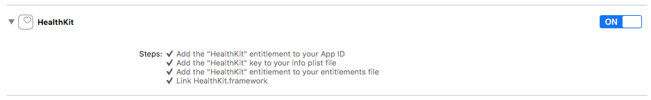

Getting started
$ npm install react-native-validic-aggregator-ios --save`
or use yarn
$ yarn add react-native-validic-aggregator-ios`
Linking
Automatic
react-native link react-native-validic-aggregator-ios
For iOS users using Pods
You still need to run pod install after running the above link command inside your IOS folder.
Manual
iOS (via CocoaPods) RN >= 60
Add the following lines to your build targets in your Podfile
pod 'React', :path => '../node_modules/react-native'
pod 'RNValidicHealthkit', :path => '../node_modules/react-native-validic-aggregator-ios'
pod 'RNValidicSession', :path= => '../node_modules/react-native-validic-session'
Then run pod install
iOS (without CocoaPods)
In XCode, in the project navigator:
- Right click Libraries
- Add Files to [your project's name]
- Go to
node_modules/react-native-validic-aggregator-ios/ios - Add the file
RNValidicHealthkit.xcodeproj
In XCode, in the project navigator, select your project.
- Add the
libRNValidicHealthkit.afrom the RNValidicHealthkit project to your project's Build Phases ➜ Link Binary With Libraries - Click
.xcodeprojfile you added before in the project navigator and go the Build Settings tab. Make sure All is toggled on (instead of Basic). - Look for Header Search Paths and make sure it contains both
$(SRCROOT)/../react-native/Reactand$(SRCROOT)/../../React - Mark both as recursive (should be OK by default).
In the General tab there will be a panel at the bottom of the screen labeled "Embedded Binaries". You should see the frameworks added here.

Next copy 'copy-validicmobile.rb' to the ios folder of your project.
Go to the build settings of your target. In the "Build Phases" tab add a new build phase by clicking the plus button at the top and selecting "New Run Script Phase".

In the new phase's text area paste in ruby copy-validicmobile.rb.

Enable HealthKit
To enable use of HealthKit in the app, within the build settings of your target, select the 'Capabilities' tab and enable 'HealthKit'.

If HealthKit is not enabled, an error is reported in the console log on app launch but will not report a error during build.
Permission Usage Descriptions
Usage descriptions have to be declared in project's Info.plist for permissions of the Camera, Bluetooth and to access and update HealthKit data.
- HEALTH_SHARE_USAGE_DESCRIPTION for NSHealthShareUsageDescription
- HEALTH_UPDATE_USAGE_DESCRIPTION for NSHealthUpdateUsageDescription
Usage
import ValidicHealthKit from 'react-native-validic-aggregator-ios';
Subscriptions
To subscribe to HealthKit sample types:
Set Subscriptions
Calling ValidicHealthKit.setSubscriptions(subscriptions) will overwrite any existing subscriptions so it is important to always pass all of the subscriptions desired each time the method is called.
To get a list of the currently subscribed data types use the method described in Current subscriptions
ValidicHealthKit.setSubscriptions([ValidicHealthKit.SampleTypes.HKQuantityTypeIdentifierStepCount]);
The function accepts an array of strings mapping to HealthKit sample types.
Current Subscriptions
To retrieve the list of Sample Types currently being observed
ValidicHealthKit.getCurrentSubscriptions((subscriptions)=>{
if(!subscriptions.includes(ValidicHealthKit.SampleTypes.HKQuantityTypeIdentifierStepCount)){
subscriptions.push(ValidicHealthKit.SampleTypes.HKQuantityTypeIdentifierStepCount);
ValidicHealthKit.setSubscriptions(subscriptions);
}
});
Events
An event will be passed to the ValidicHealthKit.eventEmitter every time Healthkit processes a record type in the background.
The event will contain the count and type of record processed from healthkit.
ValidicHealthKit.eventEmitter.addListener('validic:healthkit:onrecords', (summary){
console.log(summary.type) //type of record that corresponds to ValidicHealthKit.SummaryType
console.log(summary.count) // count of how many records of the corresponding Summary Type were processed by HealthKit
})
Events should be removed as soon as they are no longer needed or the component observing them will be umounted
componentWillUnmount(){
ValidicHealthKit.eventEmitter.removeAllListeners('validic:healthkit:onrecords');
}